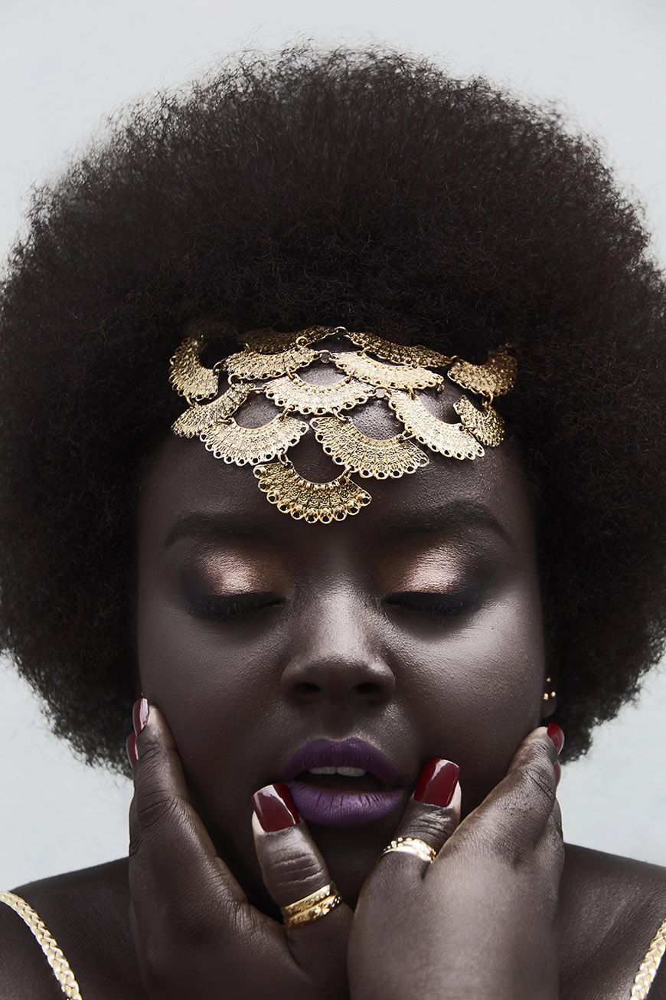
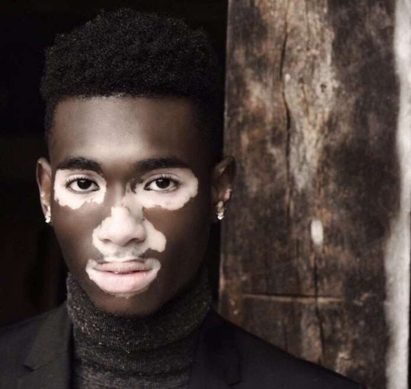
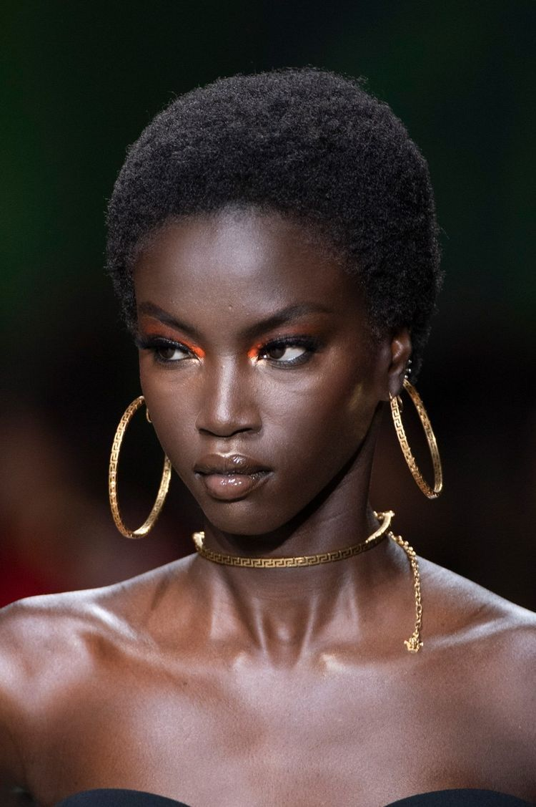

QUEBRA DE PADRÃO
VOCÊ QUE FAZ SEUS PADRÕES
  O que é ?
Padrão de beleza é uma expressão usada para caracterizar um modelo de beleza que é considerado "ideal" em uma sociedade.
História
Mesmo antes de ter esse nome, os padrões de beleza sempre existiram ao longo da história e se modificaram com o passar do tempo. Podemos observar isso, por exemplo, ao reparar como eram roupas, penteados e maquiagens mais usados em uma determinada época. O padrão de beleza também é diferente em cada país ou região. Por exemplo, o padrão de beleza da cultura ocidental é diferente da cultura oriental. Entretanto, ndependente do padão de beleza específico de determinada sociedade, a existência de padrões estéticos considerados ideais faz parte de todas as culturas.
Conceito de Beleza
Uma das principais críticas sobre estes modelos é que a definição de um padrão estético não incentiva o respeito às diferenças. Além disso, também pode dificultar a percepção de que a beleza é um conceito subjetivo, plural e diverso. A existência de um único padrão - socialmente aceito e preestabelecido - define que somente um determinado tipo deve ser considerado esteticamente bonito ou aceitável. Além disso, os padrões podem fortalecer a existência de estereótipos, ou seja, ideias estritas a respeito do que é socialmente aceito como bonito. As críticas aos padrões também envolvem o questionamento sobre a forma de definição do padrão, já que é uma visão restrita, que não engloba os diferentes tipos de pessoas, cada uma com sua própria beleza. Como consequência, é comum que pessoas que não se enquadrem no padrão predeterminado sintam-se tristes e com baixa autoestima por estarem "fora dos padrões".